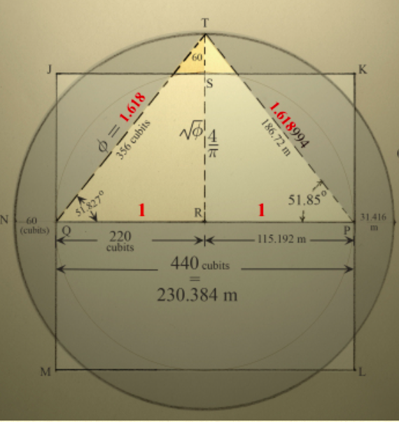
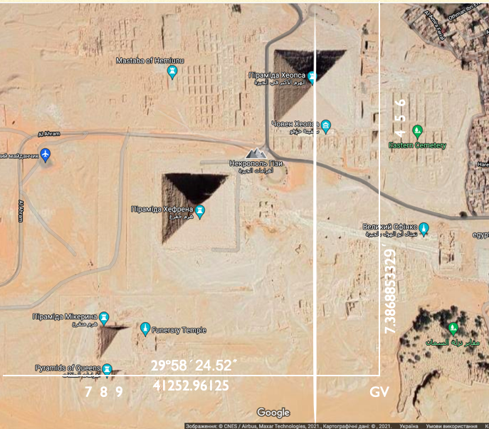
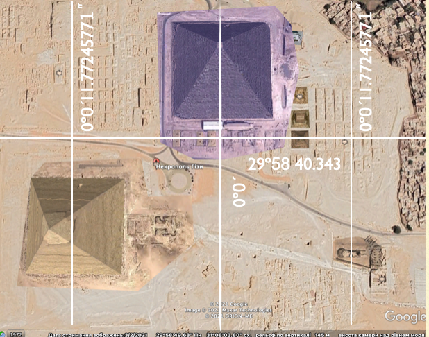
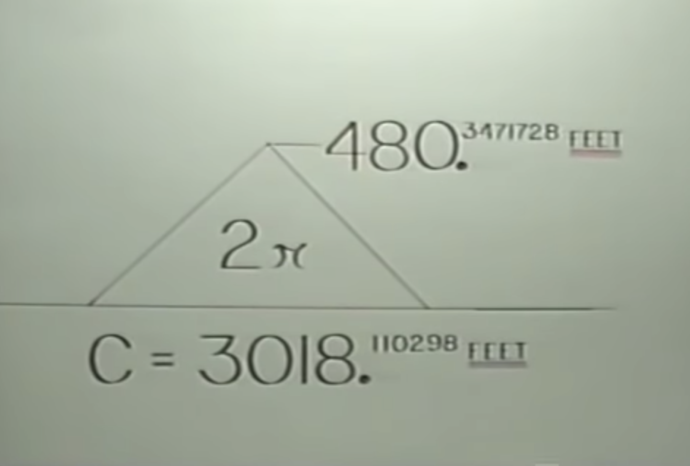
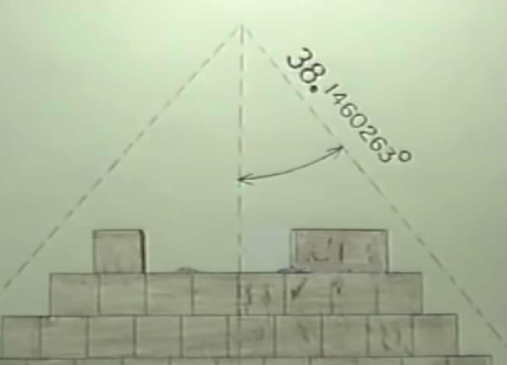
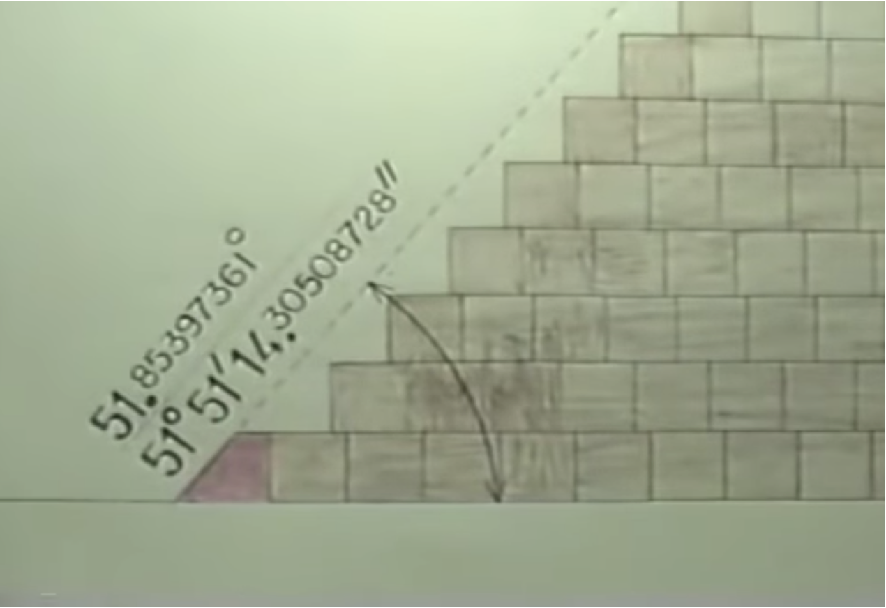
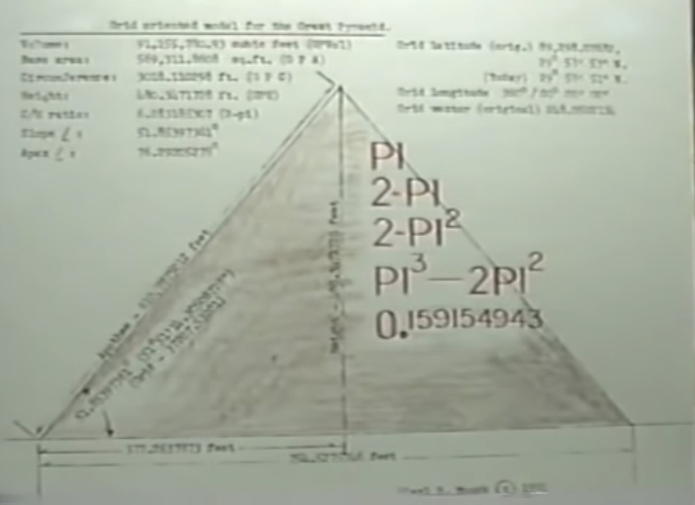

The Pyramids of Giza - the mystery of the tombs of the pharaohs, apply of unnatural power in
construction, and other theories are presented by scientists with varying degrees of intelligence in an
attempt to explain their existence. A typical statement of this kind is that the pyramids, number of which is 83 in Egypt, are the tombs of the pharaohs, and this statement has grown into a generally accepted fact. Despite the fact that no remains of any pharaoh have been found in these pyramids.
And if the Egyptian pharaohs built all these pyramids, they should be well aware in mathematics, geodesy and astronomy, much more than written sources suggest. However, archeology is designed to excavate artifacts in search of something solid that can be touched. Unfortunately, excavations will never answer the mysteries of the pyramids. The pyramids are a collection of mathematical laws, reflecting the wisdom and knowledge of the creators, and it is impossible to bury or dig, it always remains on the surface visible to those who see. But sometimes, leaving things on sight, we can not see them.
For example, the vector GV, which corresponds to the vector of the Giza pyramids. Two rows of small pyramids 4, 5 and 6 and 7, 8, and 9 were placed to reveal it. It is located at the intersection of two straight lines passing through these rows, but at this point the creators left nothing, no pyramids, no statues or other structures. Why did they do that? To make the unobvious obvious. Hundreds of strange books on the pyramids of Giza do not contain anything about this important but indefinite place on the Giza plateau. They did not even manage to manipulate the fact that the small pyramids lie on perfectly straight lines at an angle of 90 degrees, this fact is really obvious.
We already know two quantities 41252.96125 - the coordinate of the latitude of the small pyramids 7, 8 and 9, obtained from the pyramid of Cuicuilco - an area of 360 degrees, and the square of the megalithic yard 7.3868853329. Dividing these two quantities will give us the value of GV.
This confirms the fact that we are able to get results from nothing. Ever since Stonehenge explained to us how to use the language of creators, nothing has stopped us from discovering. The three pyramids represent invisible lines to the vector GV in the 3rd language of the creators. Apply 3 PI and get the longitude coordinate of Stonehenge.
We see two rows of pyramids on the map, which tells us 2 PI, which will give us the square root of a 360-degree sphere. Or we can abandon PI and represent the two lines as radians. We can also apply the square root constant of 15. And get the latitude coordinate of Stonehenge. The number of small pyramids is 6, so we apply to the vector 6 PI.
Applying we get 15.49193339. This is a new quantity, but if we get it from the Pyramids of Giza, it must be important. And so it is, as important as 14 square miles of its area. It passes through the entire city in the azimuth of Teotiocan in Mexico.
It is difficult to imagine a person over 16 years old who does not know about the existence of the Great Pyramid, it is the most famous artifact of the matrix. Unfortunately, when the Arabs dismantled the facing blocks, the pyramid lost its original shape. And for many years, scientists have tried to restore them. Why didn't they succeed? Because, they were unfamiliar with the language of the pyramids. The true parameters of the pyramid have not been lost, moreover, they simply cannot be lost. Man cannot destroy a monument dedicated to mathematics, the laws of mathematics are eternal, like any knowledge, matter is subject to destruction, mathematics is not. Remember Stonehenge, its stones gave us all its original parameters, despite the fact that 2/3 of it was destroyed, and message to us remained intact. The same is true of the Great Pyramid. The most important parameter of the pyramid was its height, and to obtain its value is a fairly simple task.
We already know what data we need for the equation. 360 degree meridian of the pyramid, Zero Meridian of prehistoric times. Deposition the Zero Meridian on the globe, the Great Pyramid has a sign that is unique to it. Its meridians pass directly through it from pole to pole. We know that the pole reflects 90 degrees, respectively, north or south latitude, so we get the second number. We already know other figures from previous calculations.
The most important constant in the matrix is 57.29 degree radians, no less important is the alternative PI, which brings radial mathematics to the metric system of calculations, as Stonehenge has shown us. Dividing 90 degrees by radians and the alternate PI and multiplying the result by 360 gives us the exact, original value of the height of the Pyramid of Cheops.
480.35 feet, the most important thing here is to understand that all measurements are in feet, not in meters, elbows or stadiums, but only in feet. Maybe you thought that the solution to this problem happened too quickly, and does not correspond to the intellectual costs of other researchers who have devoted to the definition of this value of the whole scientific work? However, for those who prefer traditional mathematics, this equation will be level 90 if they have to figure it out themselves. However, the pyramids were left to us so that we could all see them and understand the message they carry to our civilization, not to the chosen ones, and this is the beauty and simplicity of the formulas available to everyone. Of course, we found an alternative PI, and it was not easy, but to determine the height of the pyramid, we can not use it, or even a regular PI, if we want, all we really need is another longitude of 360 degrees and radians. Remember, the whole Matrix was built on these two quantities. Take the total value of the radian, divide by 360 degrees, multiply the result by the area of the Great Pyramid and again get the true height of the Great Pyramid.
Let's calculate again the data of the Great Pyramid. The first part of the equation is identical to the equation for determining the number of days in a year. The second part of the equation is replaced by a multiplication of 2 PI instead of 360 degrees, the connection of which is explained by the Great Pyramid. This time we got the result 9929.184896. This value indicates another giant artifact, a 5-cornered monster located at latitude 40 degrees 52 minutes 04.773 seconds north of the equator, protected from all (almost all) potential threats, because it is not on Earth but on Mars, a place that is called Sydonia.